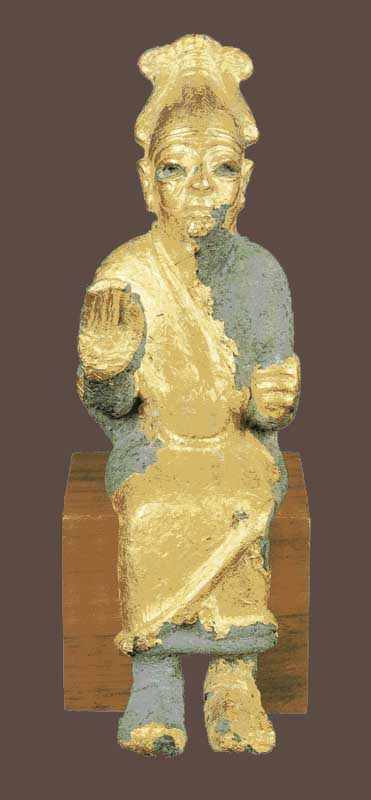

Hemos recorrido cien mil años, desde una tumba con astas de ciervo hasta la ciencia de la mente. Ahora el camino desemboca justo donde empezó este blog: en los dioses con nombre del Cercano Oriente.
Esta es la última entrega de la serie, y también una bisagra. Durante siete capítulos hemos rastreado el origen de lo sagrado en la prehistoria: los enterramientos, el ocre, Göbekli Tepe, las figuras, las cuevas, la primera cosecha, la mente que cree. Todo ese largo camino desemboca en un umbral: el momento en que lo sagrado, difuso y sin nombre, empieza a cristalizar en dioses concretos, con biografía y carácter. Y ahí es donde arranca el resto de Estratos.
Durante casi toda la historia que hemos contado, lo sagrado no tuvo nombre propio. Era una presencia, una fuerza, un espíritu, un ancestro. Los cazadores de Lascaux, los constructores de Göbekli Tepe, los campesinos de Çatalhöyük dejaron símbolos podíosos, pero no sabemos que tuvieran dioses individuales, con historias y personalidades, como los tendrán después los sumerios, los egipcios o los cananeos.
Ese salto —de la fuerza sagrada difusa al dios personal con nombre, mitos y templo— ocurre con las primeras civilizaciones, cuando la escritura permite por fin fijar los nombres y las historias. Y entre esos primeros grandes dioses hay uno que nos interesa especialmente, porque con él empieza la primera serie de este blog.
En la ciudad de Ugarit, en la costa siria, unas tablillas de la Edad del Bronce nos devolvieron el panteón cananeo. A su cabeza estaba El: el dios supremo, el anciano de barba gris, "padre de los dioses" y "creador de las criaturas", el "Toro", el "padre de los años". Un patriarca sabio y remoto que presidía la asamblea divina desde su morada, en la fuente de los dos ríos.

El nombre de este dios, El —que en las lenguas semíticas significa, sencillamente, "dios"—, sobrevivió a su propio panteón. Pasó al hebreo en títulos como El Shaddai o El Elyon, y quedó plegado dentro de la palabra Elohim. El viejo patriarca de Ugarit dejó su nombre grabado en el Dios de tres religiones posteriores. Y su esposa, la diosa Aserá, es la protagonista de una de las series de este blog.
El primer gran dios con nombre que abre este blog, El, es el punto de llegada de toda esta serie. Antes de él hubo cien mil años de gestos sagrados sin nombre. Esta serie cuenta ese "antes".
Vale la pena mirar hacia atrás y ver el arco entero, porque es enorme. Todo lo que hemos visto no fue una acumulación de curiosidades, sino los pasos de un mismo proceso: cómo el ser humano pasó de intuir algo más a construir religiones con dioses, nombres y libros.
Y justo aquí es donde este último eslabón conecta con las series anteriores de Estratos. Lo que en este blog había sido el punto de partida —el mundo cananeo, El y su corte, Aserá, el nacimiento del Dios único— resulta ser, en realidad, un punto de llegada: el desenlace de un camino de cien mil años.
Cerremos con la misma honestidad con la que abrimos. Esta ha sido la serie más especulativa del blog, y conviene recordar por qué: retrocedimos a épocas sin escritura, donde la evidencia es un hueso, un pigmento, una piedra, y donde casi todo significado es interpretación. Hemos intentado marcar en cada paso la frontera entre lo que la evidencia muestra y lo que añadimos nosotros.
Pero incluso con toda esa cautela, queda algo firme y asombroso: el impulso religioso es antíquisimo, universal y profundamente humano. Aparece en cada cultura, se remonta a los orígenes de nuestra especie, y quizá incluso antes. No hemos explicado si los dioses existen —esa no es una pregunta para la arqueología—. Hemos contado cómo, a lo largo de un abismo de tiempo, el ser humano no ha dejado nunca de tender la mano hacia algo más grande que él.
De una tumba con astas de ciervo, hace cien mil años, hasta el anciano dios de Ugarit. De ahí en adelante, la historia ya tiene nombres, textos y templos: es la historia que cuenta el resto de Estratos.
El círculo se cierra. Y vuelve a empezar.
Los datos sobre El proceden de los textos de Ugarit (Ras Shamra), excavados desde 1929 por Claude Schaeffer, y de síntesis como las de Mark S. Smith (The Origins of Biblical Monotheism) y las entradas de referencia sobre la religión cananea. La identificación de las estatuas de dios entronizado con El es la interpretación habitual (así la presentan museos como el Metropolitan), aunque no siempre puede confirmarse para cada pieza concreta.
La pervivencia del nombre El en el hebreo (El Shaddai, El Elyon, Elohim) es consenso filológico. El paso general de "fuerza sagrada difusa" a "dioses personales con nombre" es un marco interpretativo útil, no una ley: las religiones reales son más complejas y variadas que cualquier esquema evolutivo lineal.
Esta serie ha tratado deliberadamente lo especulativo como especulativo. Su propósito no ha sido afirmar cómo "fueron" las creencias prehistóricas —algo imposible de saber con certeza—, sino mostrar el largo trasfondo humano del que, mucho después, surgieron las religiones con nombre.